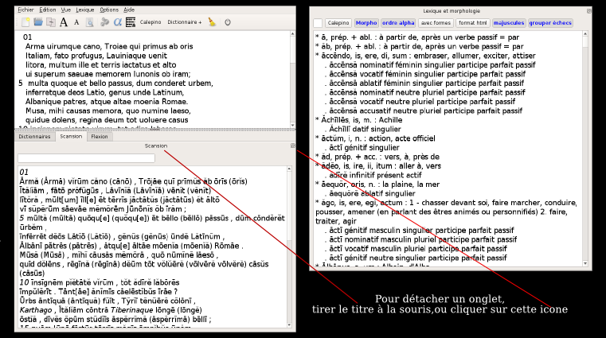

Collatinus 11 — guide
Précédent : index suivant : Pour débuter
Voici une vue générale de l'interface de Collatinus :
Les onglets de la partie inférieure peuvent être déplacés et redimensionnés :

Une description complète de l'utilisation des dictionnaires est donnée au chapitre dictionnaires.
Précédent : index suivant : Pour débuter